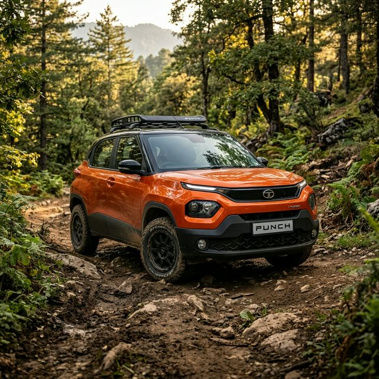
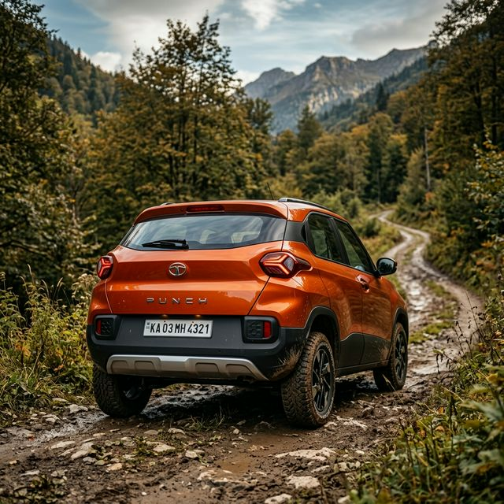
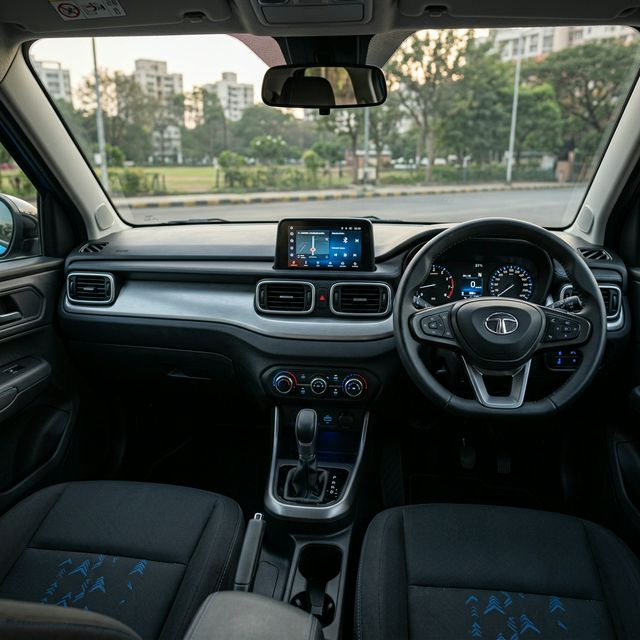

The Tata Punch has become a household name in India, thanks to its impressive 5-star GNCAP safety rating. It provides a unique blend of a compact footprint for city traffic and high ground clearance for weekend trips.


| Parameter | Details |
|---|---|
| Engine | 1.2L Revotron 3-Cylinder |
| Safety Rating | 5 Stars (Global NCAP) |
| Transmission | 5-MT / 5-AMT |
| Fuel Options | Petrol / CNG |
| Mileage (CNG) | 26.99 km/kg |
| Ground Clearance | 187 mm |
Absolutely. The Tata Punch has achieved a full 5-star rating for adult occupant protection from Global NCAP.
The main rivals include the Hyundai Exter, Maruti Ignis, and to some extent, the Citroen C3.
While not a 4x4, its high 187mm ground clearance and "Traction Pro" mode (on AMT) allow it to handle rough trails easily.
Yes, Tata offers the Punch with its unique iCNG technology that features twin-cylinder tech to preserve boot space.
Yes, the Tata Punch.ev is already launched and offers a range of up to 421 km on a single charge.
The petrol variant offers a healthy 366 liters of boot space (ISO standard).
If safety and ride quality are your primary concerns in a budget SUV, the Tata Punch is currently unbeatable in the Indian market.